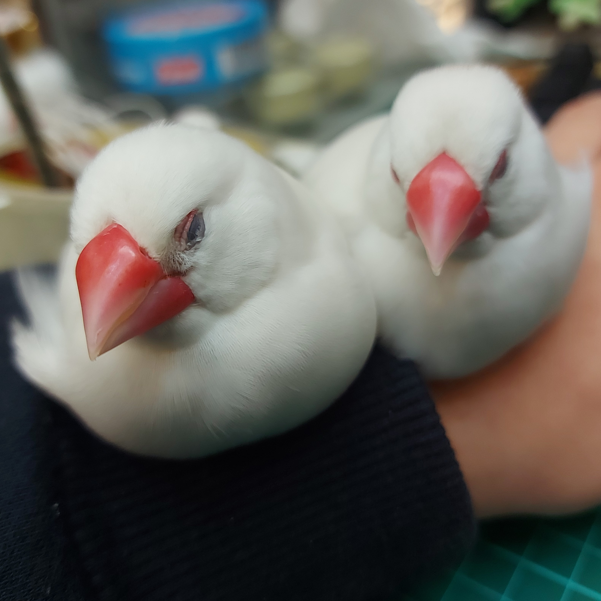
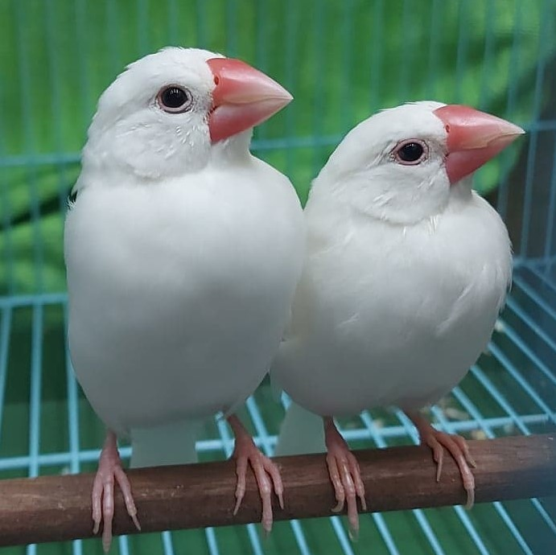
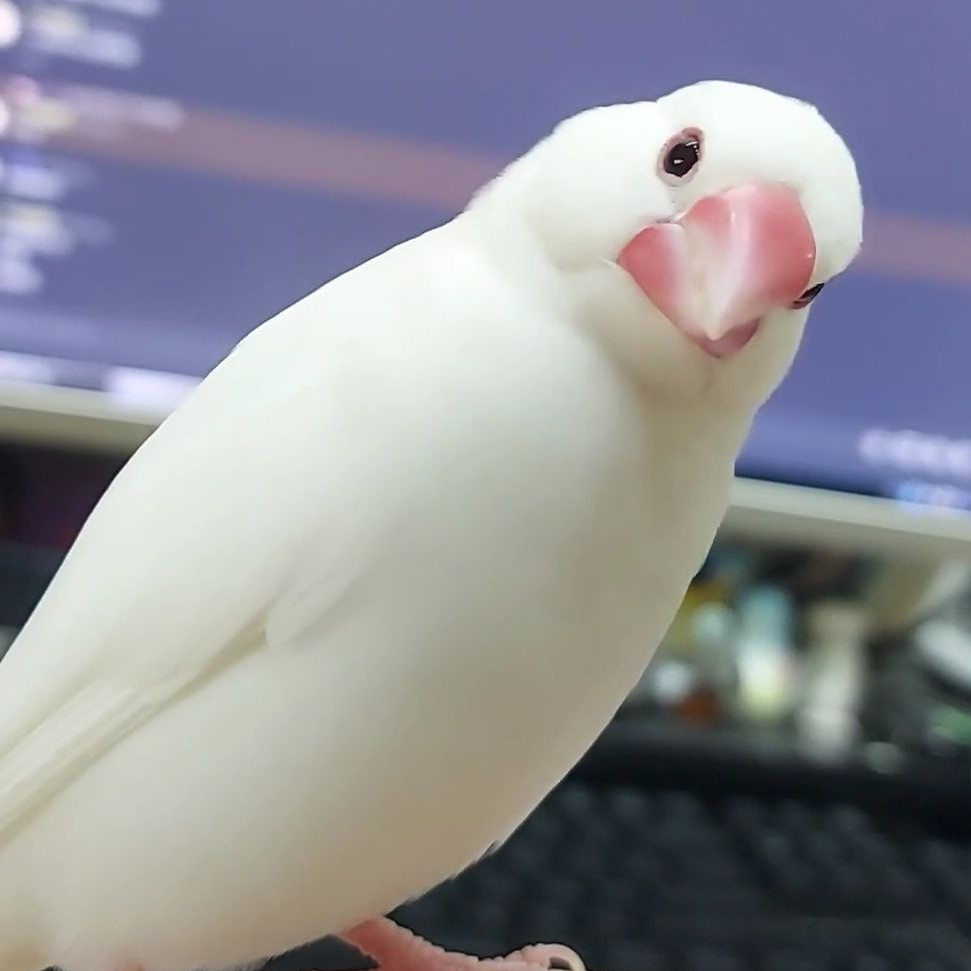
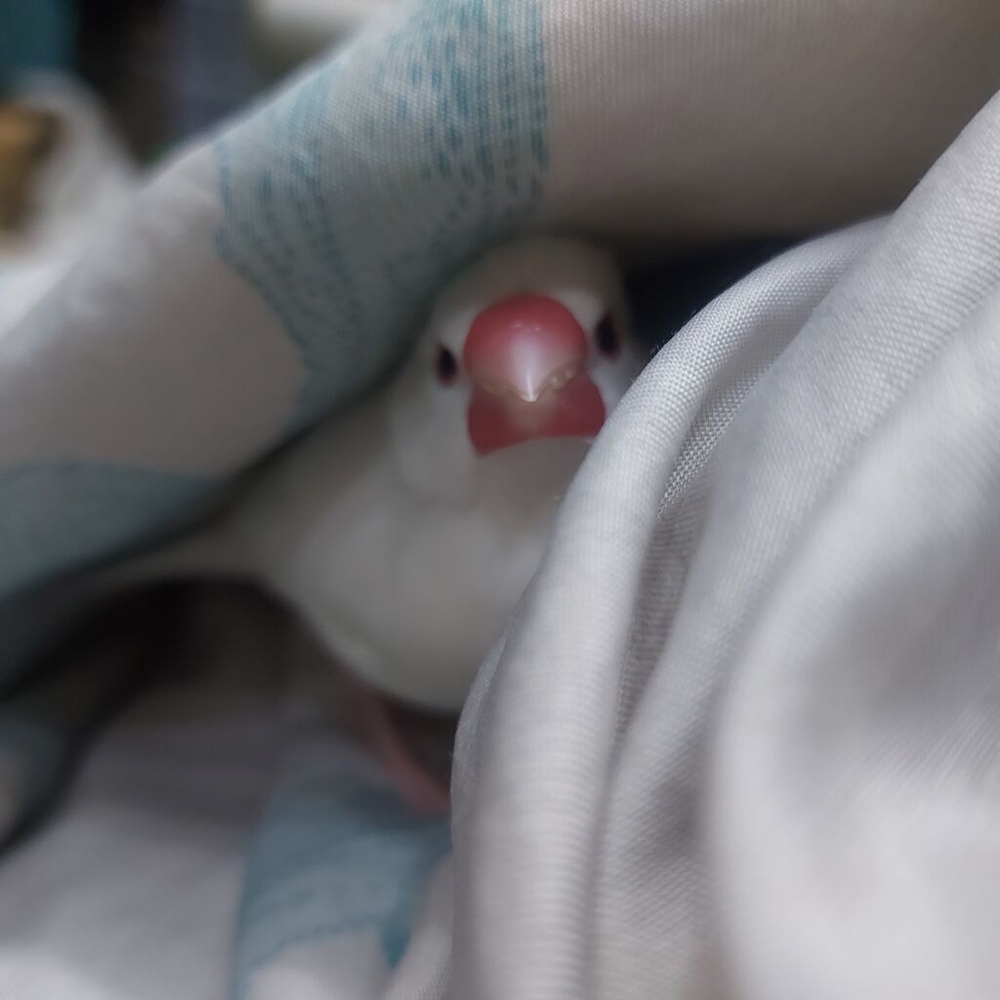
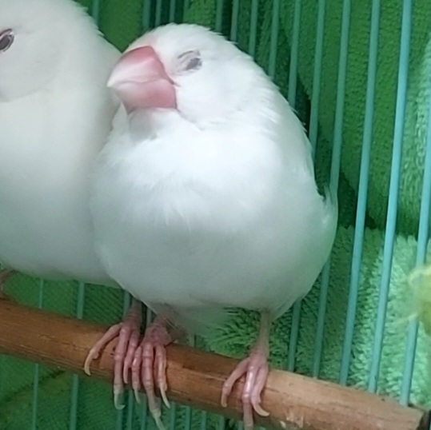
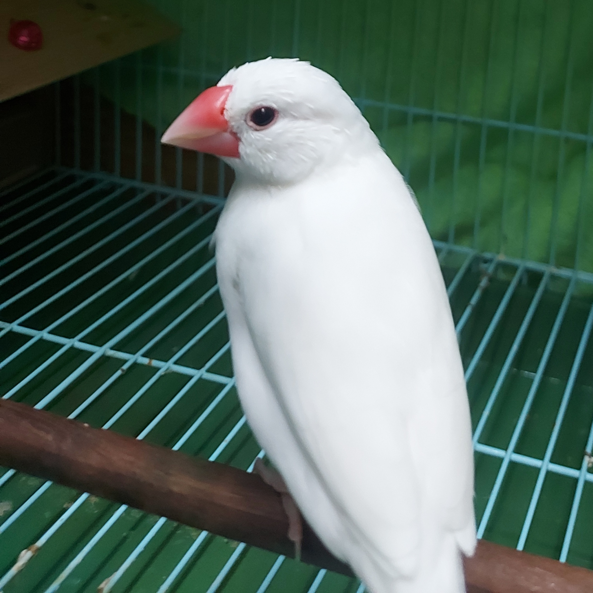

靜:
ㄅㄆㄇㄈ是4隻白文鳥，
雖然顏色看不出來誰是誰，但是靜都認得出來
之後如果生了小小鳥，會用注音往下取(不會想名字的人
因為更新網站太麻煩了，想要看到ㄅㄆㄇㄈ的話
在噗浪搜尋標籤#ㄅㄆㄇㄈ鳥日記就有了
大學住外面，六日回家才會更新

皮皮必必(PB/ㄅㄆ)
ㄅㄆ是從小手養到大的，很親人，親到會找陌生人，但是只有我才叫得來(驕傲
愛咬人(但是好像是我寵出來的)、喜歡鑽被子、躲箱子、非常喜歡鑽進飼料桶裡面吃飯
會吃ㄇㄈ的醋，我想要跟ㄇㄈ培養感情，會飛來搶位置，對著ㄇㄈ大叫
ㄅㄆ雖然很機車，但是他們很貼心很可愛，還很雙標(什
寵他們不是沒理由的(

茉茉浮浮(ㄇㄈ)
ㄇㄈ帶回家的時候已經是亞成鳥了
不親人，小時候跑出來帶不回家，只能用網子抓，有陰影所以很怕人
不過現在好多了，我叫會回應，還會想要找(咬)我
是籠中鳥，希望有朝一日可以讓他們親人到可以出籠
有嚴重的異食癖，會想要把任何小東西吃下肚
所以籠子裡面不能出現比他們嘴巴小，或是可以被他們咬破、咬碎的非食用物品
皮皮必必事跡
＊我不舒服躺著睡覺，陪著我睡覺，直到我醒來
＊心情不好，他們那一整天就都在我附近繞
＊我工作累到在沙發上睡著，他們會自己回家睡覺
＊家裡不管誰叫他們，想要他們上手，都沒用，只有我叫才會來(再說一遍
＊很會吃醋
茉茉浮浮事跡
＊會吃我手上的食物(這對於不親人的鳥來說很特別)
ㄅㄆㄇㄈ日記
＊2020/08/08 ㄅㄆ進住
＊2021/07/04 ㄇㄈ進住
＊2022/01/24 ㄇㄈ換籠
＊2022/04/24 ㄇㄈ換籠
＊2022/11/23 必必生蛋

我是必必，全名是可爾必思
我是勇敢的女孩!
爪子有生長過快的問題，常常要剪指甲，我討厭指甲剪！
喜歡撲向媽媽的臉，媽媽手上的傷口都是我咬出來的，我很厲害吧

我是皮皮，全名是閃光皮皮，我是必必的哥哥
很愛說話，我很喜歡在高高的地方還有媽媽的耳邊大叫，媽媽一直說我很吵
最愛鑽媽媽的手了
常常兇必必，但是我只是想要跟媽媽撒嬌啦

我是茉茉，茉是茉莉花的茉，是小女生呀
喜歡洗澡也喜歡泡澡，玩水水最高興啦！
媽媽的手很好咬！我會咬很大力！

我是浮浮，好像是浮萍吧，是男孩子嘎
喜歡亂吃東西，喜歡跟茉茉貼貼，被茉茉理毛很舒服
之前亂咬嘴巴卡住，都是媽媽救我的！媽媽好像沒有那麼可怕
所以雖然我很膽小，但是我也開始會自己去找媽媽啦